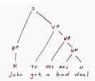
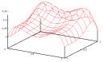

Location
Announcements
Assignments
References
Weekly Readings
Course Policies (first time here? read this)
 |
 |  |
 |  |
 |
Anoop Sarkar
Location: AQ 3159 (Academic Quadrangle)
Time: 2:30-3:20pm MWF
gosfu Term: 1051
gosfu Class Number: 6880
Mailing List: cmpt-413 @ sfu.ca
Mailing list archives
Office: ASB 10830
Office hours: Wed 3:30-4:30
Computational Linguistics is the study of human language behaviour and language learning from a computational perspective. This course will examine algorithms used in the automatic analysis or production of language. Along with formal models of natural language, we will also study the engineering of natural language processing software. This course is a broad introduction to this important sub-field of artificial intelligence and is intended for advanced 3rd year or 4th year undergraduate students.
More details: Course outline
Announcements |
- Grading for the course:
- Final Exam: 30%
- 3 quizzes (1 hr each,
closed
book, held in class): 14% each (total of 42%)
- Homeworks: 28%
- Important Dates:
- Jan 10, 2005: First day of class
- April 8, 2005: Last day of class
- Feb 11: Quiz #1
(Topics 1, 2 and 3)
- Mar 11: Quiz
#2 (Topics 4, and 5)
- Apr 1: Quiz
#3 (Take-home, Topics 6 and 7)
- Final Exam: 12-3pm, April 15, 2005,
Location: WMC3220
- Holidays: Fri, Mar 25;
Mon, Mar 28
(no classes)
- Location of data files and
software packages:
~anoop/cmpt413/on fraser.sfu.ca and CSIL machines - Mon, Jan 10, 2005: Course web page created
- Tue, Feb 1, 2005: HW1 and HW2 grades now available on
gradebook.cs.sfu.ca
Assignments |
A brief note on assignment submission and development: Your homework will be submitted electronically using the department-provided submission server. Connect to the submission server by going to the URL: https://onara.cs.sfu.ca/
It is expected that your program will compile and run using the standard perl environment on the Linux CSIL lab machines. If you are developing on a Linux or Windows machine at home, you have to ensure that the code will run on the CSIL machines before you submit the assignment. Please either visit the CSIL lab machines or you can use
ssh
to login to the CSIL Linux machines and also use scp to
copy over and test your programs on the CSIL Linux machines before you
submit them. Check the MTF
Layout map for the machine names.For those using Windows machines, you might want to look into the use of the cygwin environment and the
dos2unix
command on Linux. The character conversion between Windows and Linux is
sometimes a key hidden cause for your assignments failing to work on
the CSIL machines. There will be no extensions for problems with
non-CSIL machines, so don't ask.On some CSIL Linux machines, in some rare cases, you might have to extend your CPU time limit for a process. If you are using tcsh then run the command "limit cputime 1800" to extend CPU time to 1800 secs or 30 mins. If you are using bash then use the command "ulimit -t 1800".
All homework files are in the Unix directory
/home/anoop/cmpt413/.
The directory is
accessible only on the CSIL machines and on fraser.sfu.ca.
Once you are logged in to a CSIL machine or fraser, access
the directory by using the command: cd /home/anoop/cmpt413/
Perl Programming
- Introduction to Perl Programming
- Perl Crash Course
- Download perl_interpreter.pl
and run it using the command
perl perl_interpreter.pl.Enter commands from the Perl crash course (above) and observe the results - Code that explains Perl
Default Variables (tarfile)
- Tutorial
on Collections and References in Perl
- Optional: Chp 1-8 (WC&O)
- Links: the Picking Up Perl tutorial, PerlIntro, Diana Inkpen's tutorial, more tutorials on perl.com.
- Advanced Perl Programming
- Optional: Chp 9,24,28-30 (WC&O)
Homework Files
- Homework #1. Distributed on Mon, Jan 17, due on Mon, Jan 24.
- The data files are available in
/home/anoop/cmpt413/hw1/ - Homework #2. Distributed on Mon, Jan 24, due on Mon, Jan 31.
- The data files are available in
/home/anoop/cmpt413/hw2/ - Homework #3. Distributed on Wed, Feb 2, due on Wed, Feb 9.
- The data files are available in
/home/anoop/cmpt413/hw3/
- The AT&T finite-state transducer toolkit is available
at
/home/anoop/cmpt413/for-linux/fsm-4.0/bin - You can put the above directory in your PATH to access the files in them without using the full path or copying them over to your directory
- Homework #4. Distributed on Mon, Feb 14, due on Mon, Feb 21.
- The data files are available in
/home/anoop/cmpt413/hw4/ - The Porter stemmer is available from Martin Porter's page
- Homework #5. Distributed on Mon, Feb 21, due on Mon, Mar 7.
- The data files are available in
/home/anoop/cmpt413/hw5/ - Old data files from previous homeworks are now archived
in
/cmpt413on CSIL machines (but not onfraser). - Homework #6. Distributed on Mon, Mar 14, due on Mon, Mar 21.
- The data files are available in
/home/anoop/cmpt413/hw6/ - Homework #7. Distributed on Mon, Mar 21, due on Wed, Mar 30.
- The data files are available in
/home/anoop/cmpt413/hw7/ - Homework #8. Distributed on Mon, Apr
4, due on Mon, Apr 11. Optional:
Submit in place of earlier homework.
- The data files are available in
/home/anoop/cmpt413/hw8/
Textbook and
References
|
-
Recommended

Speech and Language Processing: An Introduction to Natural Language Processing, Computational Linguistics, and Speech Recognition by Daniel Jurafsky, James H. Martin. 934 pages 1 edition (January 26, 2000), Prentice Hall, ISBN: 0130950696
The book also has a webpage. In particular visit it for the Errata and the online Resources sections.
Programming Perl by Larry Wall, Brett McLaughlin, Jon Orwant. 400 pages 3 edition (August 30, 2000), O'Reilly & Associates, Inc., ISBN: 0596000278
While the book "Programming Perl" is not a reference book for this course, you might find it or an equivalent perl programming book invaluable when dealing with the homeworks which include programming assignments to be done in Perl. For my own use, I find "The Perl CD Bookshelf" published by O'Reilly to be quite a good deal: it contains 7 books on Perl (including this one) on one cdrom.
There are many online Perl tutorials of varying quality. Links to some of them are provided in the Links section below.
-
Reference (do not purchase unless you feel it is absolutely necessary; usually available from the library)

Foundations of Statistical Natural Language Processing by Christopher D. Manning, Hinrich Schutze. 680 pages 1 edition (1999), M.I.T. Press/Triliteral, ISBN: 0262133601
This book will be useful in cases where you want a different presentation of the same material that is required reading from J&M. In many cases the statistical approaches are covered in a bit more detail in this book. However, it does not contain all the topics that we will cover in this course.

Introduction to the Theory of Computation by Michael Sipser. 480 pages (December 1996), PWS Pub. Co. ISBN: 053494728X
Syllabus and Reading |
The following list summarizes the topics that will be covered in this course. Also included are the required and optional readings for each topic. J&M refers to the book "Speech and Language Processing" by Jurafsky and Martin; WC&O refers to "Programming Perl 3rd Edition" by Wall, McLaughlin and Orwant; Sipser refers to "Introduction to the Theory of Computation" by Michael Sipser (see below for detailed information on each of these books). Apart from the required readings, the optional or review readings are provided for those who are having difficulty understanding the material.
- Introduction to Linguistics and Formal language theory
- Chp 1 and 2 (J&M)
- Review: Chp 0 and 1 (Sipser)
- Notes #1
- Links: Text to Speech, Speech Animation, Summarization
- Links: Dialog Systems, Question Answering, NLP & Graphics
- Finite-state methods: automata and transducers
(applications to orthography, morphology, phonology)
- Chp 3 (J&M)
- Notes #2
- Notes #3
- Notes #4 (old version)
- Notes #5
- Extra slides from Richard Sproat's CL course:
- Introduction to
computational phonology,
- Compiling
context-dependent rewrite rules
into finite-state transducers
- Links: An example NLP application using finite-state
transducers: Machine
Transliteration. Kevin Knight and Jonathan Graehl. Computational
Linguistics, Volume 24, Number 4, December 1998. (the pronunciation mapping for homework #3
was taken from this paper)
- Finite-state methods: edit distance (shortest path in a transducer, spelling correction, evaluation metrics)
- Chp 5 sections 5.1-5.6 (J&M)
- Notes #6
- Links: Levenshtein
Demo
- Probability models and language: n-grams
- Reading: Sections 1-14 from Kevin Knight's statistical MT workbook
- Reading: Sections 1-2.7 (p.15) & Section 5.1 from Empirical Study of Smoothing by Chen and Goodman
- Notes #7
- Notes #8
- Notes #9
- Chp 6 sections 6.1-6.2 and 6.7 (J&M).
- Warning: it is essential to read the errata pages for this chapter and do not read sections 6.3-6.6 from J&M
- Hidden markov models (sequence learning)
- Chp 5 section 5.9; sections 7.1-7.3 and Appendix D (J&M)
- Notes #10
- Viterbi spreadsheet (Excel or Openoffice): viterbi.xls
- Forward-backward spreadsheet (Excel or Openoffice): hmm.xls
- Some applications of sequence learning (automatic speech
recognition, part of speech tagging, name-finding,
word segmentation)
- Context-free grammars and parsing algorithms (natural
language syntax)
- Notes #13
- Notes #14
- Notes #15
- Notes #16
- Parsing demos using the Python Natural Language Toolkit (nltk)
v1.2 (not fully tested with v1.4)
- Recursive descent
(backtracking) parser
- Shift-Reduce parser
- CKY parser (repeatedly use
the Bottom-Up Strategy)
- Earley parser
- Using different grammars and input strings: NP Grammar1, NP
Grammar2
- Earley
Algorithm (ppt) from Jason Eisner's NLP course
- Chp 9 and Chp 10 (J&M)
- Review: Chp 2 and 4.1 (Sipser)
- Natural Language
Semantics (translation into logic,
language understanding, language generation)
- Chp 14 and 15 (J&M)
- Feature structures and unification
- Notes #17
- Chp 11 (J&M)
- Natural Language and
complexity theory (mathematical
linguistics)
- Chp 13 (J&M)
- Lexical semantics and word-sense disambiguation
- Notes #18
- Chp 16 and Chp 17, sections 17.1 and 17.2 (J&M)
- Discourse and dialog models
- Notes #19
- Chp 18, section 18.1 and Chp 19, sections 19.1-19.3 (J&M)
Course Expectations and Policies |
- Email policy: Use the
prefix
"CMPT 413: " or "cmpt-413: " on all your messages. If you do not
include
the prefix, then the mail might go unanswered. Do
not send general questions about the
class or the material to me directly. Instead use the class mailing
list
"cmpt-413 @ sfu.ca" to post your question.
- For personal advising come during my office hours (posted above).
- Students are expected to attend all classes and to arrive
on
time: announcements about assigned readings, homeworks and exams will
be made available at the start of each class.
- Students are expected to have read all assigned readings
(from
the required reading material) before class. Simply attending the class
will not
provide adequate preparation for the exams. You might think that since
the lecture notes for this course are online you can skip the class and
catch up later. This is a bad idea for three reasons: (1) The lecture
notes are only designed to be discussed in class and they will often
not make sense in isolation. (2) Many points in the lecture notes are
explained using the blackboard or transparencies which are not provided
online. (3) Many concepts are explained in class using interactive
tools or demos which are typically much easier ways to understand the
material and you will be unaware of this if you skip class and rely on
the lecture notes.
- Late assignments will be graded as follows: marks earned for assignments submitted after 11:45pm on the due date will be multiplied by a 0.8 penalty. Submissions two days late will get a penalty of 0.6 * grade, and so on (Sat, Sun and holidays are included). Any submission identical to a solution key will get zero marks.
- If you must miss an exam because of illness, you are required to contact me prior to the exam either by email or a message in my mailbox. A valid note from a medical doctor is required specifying date of absence and reason. If you miss an exam due to valid medical reasons you will be graded on your performance on the rest of the course. Make up exams will not be given under any circumstances.
- Note on quiz and exam
answers:
In many cases you will be asked to provide an algorithm or a general
solution and I might provide some examples to help you test your
solution. You should not encode the examples into your solution and
expect to get it marked correct. Here is an example (not from
computational linguistics, but to explain this point further): Let's
say I ask you to provide the relationship between the hypotenuse and
the other 2 sides of a triangle and I say that you should test your
solution with the case where the hypotenuse is of length 5 and the two
other sides are of length 3 and 4 respectively. In this case the
correct answer would be the equation that works for any triangle
(answer: a2+b2=h2,
where h is the hypotenuse)
and not an answer that provides the answer for the example (incorrect
answer which only provides the relationship for the example: 9 + 16 = 25). During a quiz or exam
resist the temptation of using the examples provided directly in your
answer. It is tempting because in many cases such an answer will be
easy to obtain as opposed to the correct general solution. If you don't
get the general solution correct: at least you will get partial credit.
- Copying
on assignments or exams will be taken very seriously. If you are caught
cheating on an assignment or an exam you will be hauled off for
disciplinary action. There will be no assignments to be solved as a
group. Despite this, students often meet to discuss the assignments.
You have to be very careful that you do not take any notes or copy
during these meetings.
- For more on academic dishonesty read the University code
of academic honesty.
- I will give partial credit on exams. If you provide an incorrect answer but your work shows some understanding you will get partial credit, but if you have the correct answer, and your work shows a misunderstanding of the course material you will lose marks.
Courses in Computational Linguistics Elsewhere |
- Alberta: CMPUT 650: Natural Language Processing
- Dekang Lin
- CMU: CS 11-711: Algorithms for NLP (Fall 2002)
- Alon Lavie
- Colorado: CS Natural Language Processing (Spring 2000)
- Jim Martin
- Cornell: CS 674: Natural Language Processing (Spring 2000)
- Lillian Lee
- JHU: CS 600.465: Introduction to NLP (Fall 2000)
- Jan Hajic
- JHU: CS Introduction to Natural Language Processing, Course # 600.465 (Fall 2002)
- Jason Eisner
- Maryland: CS/Ling Ling645/CMSC723 Introduction to Computational Linguistics (Spring 2001)
- Philip Resnik
- MIT: 6.863J: Natural Language & the Computer Representation of Knowledge (Spring 2002)
- Bob Berwick
- Pennsylvania: CIS 530: Computational Linguistics (Fall 2000)
- Steven Bird
- Stanford: CS/Ling CS 224N/Ling 237 Natural Language Processing (Spring 2002)
- Chris Manning
- Toronto: CSC 401: Natural Language Computing (Winter 2002)
- Gerald Penn
- UIUC: Ling 406: Introduction to Computational Linguistics (Spring 2005)
- Richard Sproat
- Utah: CS 5340/6340 Natural Language Processing (Fall 2002)
- Ellen Riloff
anoop at cs.sfu.ca